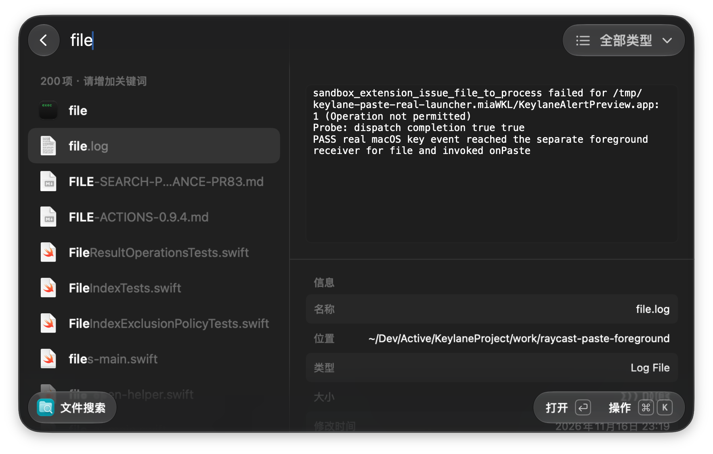
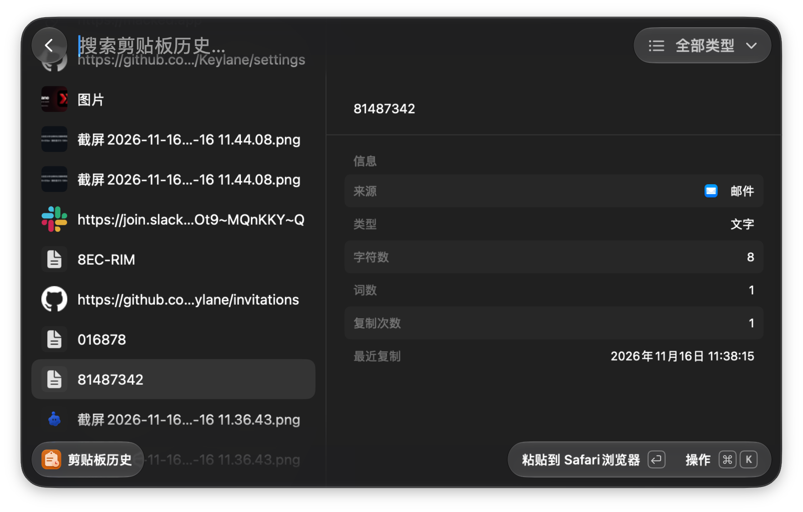

应用，即搜即开。
名称、拼音或模糊关键词都可以。收藏常用应用，用键盘直达。
为 macOS 而生
应用、文件、剪贴板、常用工具。
一个原生搜索窗口，让双手留在键盘上。
macOS 26+ · Apple Silicon

ONE PLACE. EVERY DAY.
按下 Option + Space，把想做的事交给 Keylane。
名称、拼音或模糊关键词都可以。收藏常用应用，用键盘直达。
计算、词典、Emoji、窗口操作和系统设置，都在同一个入口。
快捷链接、文字片段、Apple 快捷指令与脚本，配上你的别名和快捷键。
FIND YOUR FILES
按类型筛选，预览内容与文件信息。结合 Spotlight 与本地索引，在你授权的目录中搜索，不必来回打开窗口。

KEEP YOUR CONTEXT
文字、图片、文件，搜索、预览、置顶，再粘贴到正在使用的应用。历史保留多久、是否跨会话保存，由你决定。

KEEP YOUR WORKFLOW
导入 .rayconfig 或 Quicklinks JSON，将支持的偏好、命令别名、快捷键与快捷链接带到 Keylane。先预览变更与冲突，再决定如何导入。
当前源码构建支持此功能，公开下载包尚未包含。
查看迁移说明 ↗导出 Raycast 配置
设置 → 高级 → 从 Raycast 迁移
预览并确认，退出后重新打开
NATIVE BY DESIGN
Swift、SwiftUI 与 AppKit 直接构建主界面，不用 WebView 承载启动器。为日常高频操作，选择更直接的原生路径。
Keylane
完全免费，无订阅、无付费功能分层。GPL-3.0-or-later 开源，可查看、修改和自行构建。
GPL-3.0-or-later ↗Raycast 2
免费核心功能；高级功能订阅。Raycast 2 使用原生宿主与 Web 界面。
了解架构 ↗ · 查看产品 ↗SuperCmd V2
原生 Swift 界面，一次性付费。V2 源码未公开；V1 为免费开源版本。
查看产品 ↗性能取决于版本、数据与启用功能；这里不做未经基准测试的速度或内存排名。
LOCAL FIRST
设置与历史保存在 Mac 上，没有内置遥测或云同步。文件与系统权限按需授予。主动使用文件 AI 时，才会向你配置的服务发送问题与所选上下文；第三方服务可能收费。
未来将逐步支持 Raycast、SuperCmd 中更多实用功能，继续完善扩展兼容、AI 工具与工作流。这是发展方向，不是当前功能或全量兼容承诺。
查看路线图 ↗下载 DMG 和 SHA-256 文件，核对校验和后，将 Keylane 拖入“应用程序”。当前公开安装包为 1.0.2 Beta 1（build 27），使用 ad-hoc 临时签名，未经 Apple 公证，需手动安装。macOS 可能阻止首次打开。
Apple 安全说明 ↗当前源码采用 GPL-3.0-or-later。旧版 Beta 1 安装包保留其随附的 PolyForm Noncommercial 许可，不因源码改换许可而追溯变更。发行包内容及已知问题见对应发布说明。
发布说明 ↗1.0.2 Beta 1 · 未经 Apple 公证